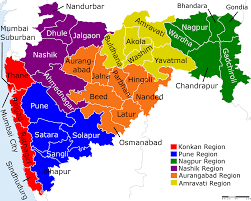

LOCATION
Maharashtra is situated in the western part of India and covers the entire Deccan region. With an area of
approximately 308,000 sq km (119,000 sq miles), it claims the distinction of being counted amongst the
largest states of India. The state stands bounded by Chhattisgarh in the east, Madhya Pradesh in the north,
Karnataka in the south, Goa in the southwest, Andhra Pradesh in the southeast and Gujarat in the northwest.
Situated in between Maharashtra and Gujarat is the Union territory of Dadra and Nagar Haveli.

The mighty Arabian Sea makes up the west coast of Maharashtra. Running parallel to this coast are the
Sahyadri Hills, also known as the Western Ghats, which rise upto the height of 1,200 meters (4,000 feet).
To the east of the ghats lies the Deccan Plateau. On the other hand, the Konkan coastal plains are situated
to their west and boast of a width of 50-80 kilometers. Western Ghats are one of the three watersheds of
India and it is from here that most of the rivers in South India have found their origin.
(Click on the image to go to Google Maps)